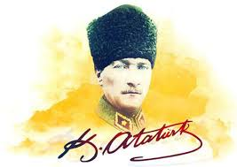

Tanıkların Gözüyle ATATÜRK
Devlet Kurucusu ATATÜRK(İsmet İnönü)
Atatürk'ün Yüksek Kumandanlık Kudreti ve Meziyetleri(Ali Fuat Cebesoy)
Eşsiz Bir Kahramanın Doğuşu(M. Fuat Köprülü)
Atatürk'ün İnsanlığı(Yakup Kadri KARAOSMANOĞLU)
10 Kasım 1948 Londra'da Bir Anma Töreni(Sir Percy LORAINE)
